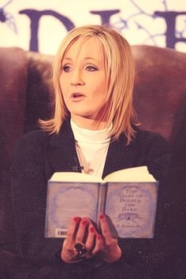

Joanne Rowling
"Este imposibil să trăieşti fără sa eșuezi de câteva ori, doar dacă nu cumva eşti atât de precaut încât se poate spune că de fapt nici nu trăieşti, caz în care ai eșuat încă de la început."
Născută în Yate, Anglia, pe 31 iulie 1965, J.K.Rowling provine dintr-un mediu economic umil însă a cunoscut succesul odată cu publicarea romanului "Harry Potter și Piatra Filozofală", un roman fantastic pentru copii. Opera a fost un bestseller internațional și Rowling a scris încă 6 cărți din aceeași serie, ce s-au vândut în sute de milioane de exemplare și au fost apoi adaptate pe marele ecran.
Absolventă a Exter University, Rowling s-a mutat în Portugalia în 1990 pentru a preda engleză. Acolo s-a întâlnit și măritat cu jurnalistul portughez Jorge Arentes. Fiica cuplului, Jessica, s-a născut în 1993. După ce divorțează, Rowling se mută în Edinburgh cu fiica sa pentru a locui aproape de sora sa, Di. În timp ce se străduia să-și câștige existența, trăind din somaj, Rowling a lucrat la o carte, cu o idee ce se ivise în timp ce se afla în tren spre Londra în 1990. După un număr consierabil de respingeri, a vândut cartea pentru aproximativ 4000 de lire.
De ce J.K.Rowling? Harry Potter a fost cartea copilăriei mele. Îmi amintesc cu mare plăcere că am primit primele două volume de Crăciun și că mi-am petrecut întreaga vacanță citindu-le. Am crescut apoi cu Harry Potter, am așteptat ca la 11 ani să primesc faimoasa scrisoare de la Hogwarts iar apoi m-am regăsit în personajul Hermione, admirându-i dorința de a invăța și pasiunea pe care am încercat să mi-o imprim. Ajunsă la adolescență, am urmărit discursul motivațional al autoarei pentru promoția 2011 a Harvard University unde își folosește experiența personală de viață pentru a evidenția cele mai importante sfaturi pe care le-ar putea da cineva unui viitor "adult".
